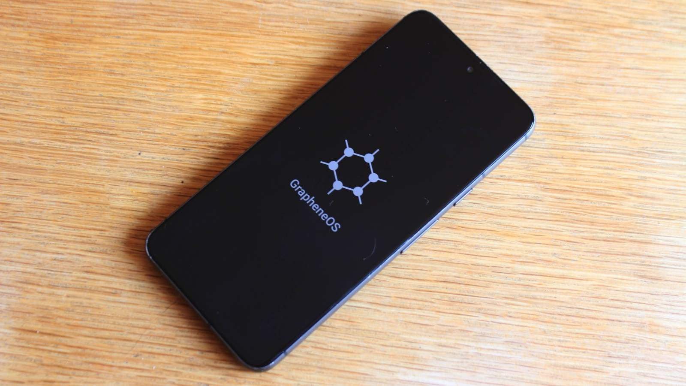
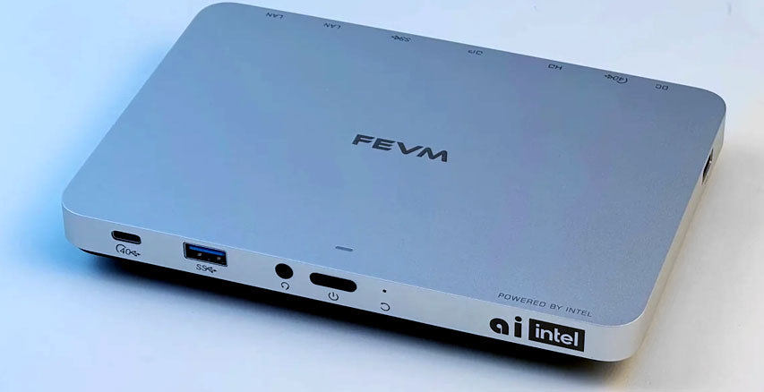
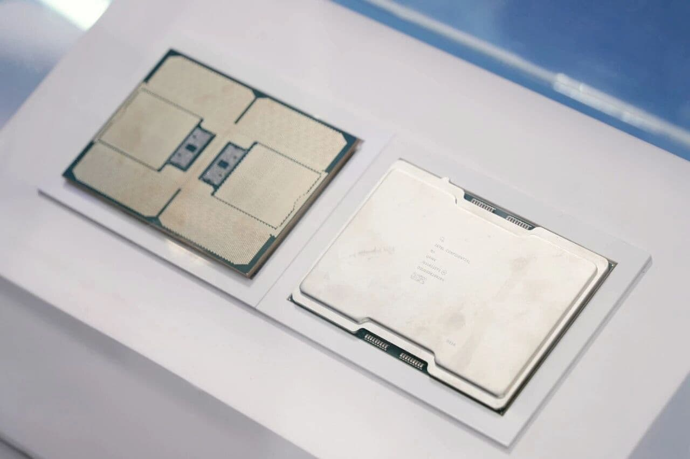
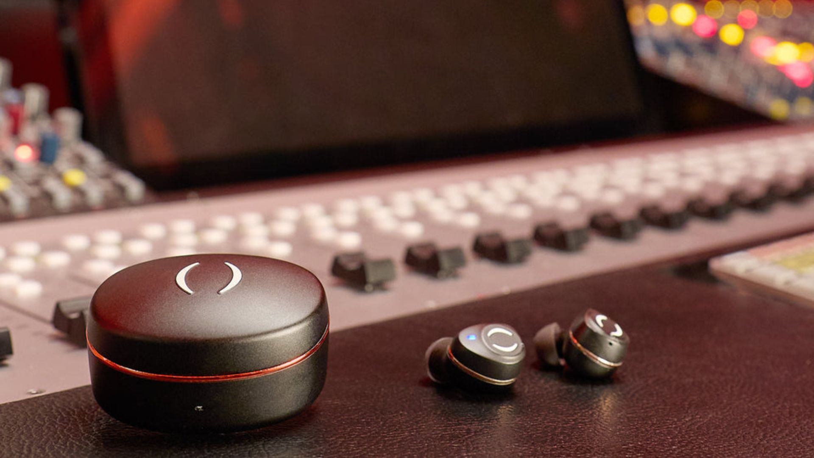
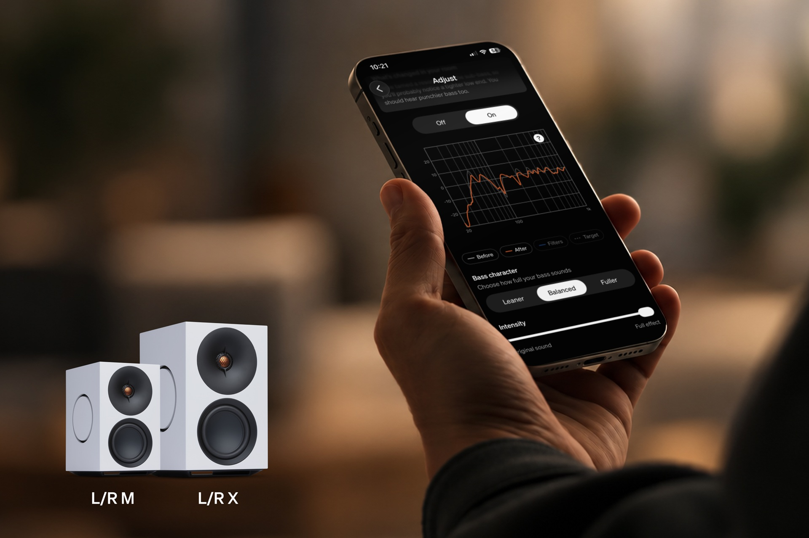
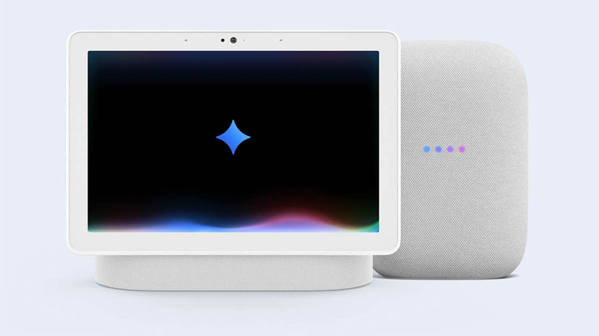
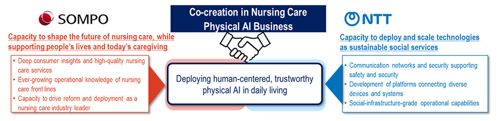

Morning routine Tech — Le brief du jeudi 12 novembre 2026
by Trinity
12 actualités · 9 min de lecture
Sélection privée arrêtée le 12 novembre 2026 à 18 h 49 (Europe/Paris). Douze sujets après comparaison des quatre historiques locaux disponibles, dont le pilote du jour ; une actualité audio conservée dans la fenêtre justifiée de 48 heures. Les dates connues seulement au jour près ne prouvent pas une publication avant la seconde de coupure.
Apple & Google
1/12 — Apple ferme sa communauté d’entraide, mais conserve ses archives
Dans un article publié le 12 novembre, Trusted Reviews rapporte qu’Apple fermera sa Support Community aux nouvelles contributions le 20 novembre. Les discussions existantes doivent rester consultables en lecture seule, ce qui préserve les réponses accumulées à des problèmes de Mac, d’iPhone et d’autres appareils. Le média constate que l’envoi de nouveaux messages est déjà interrompu, en amont de cette date officielle.
La différence est importante : les anciens fils pourront encore aider à résoudre une panne, mais ils ne pourront plus accueillir de nouveaux échanges. Apple renvoie vers ses ressources officielles d’assistance et explique sa décision par une réévaluation de sa stratégie et des besoins des clients, sans en détailler davantage les raisons. Pour les utilisateurs, c’est donc la disparition d’un lieu d’entraide hébergé par le fabricant, pas l’effacement annoncé de toute sa mémoire technique.
Source : Trusted Reviews
2/12 — GrapheneOS prépare les Pixel 11, sans promettre de disponibilité immédiate

Illustration de GrapheneOS ; il ne s’agit pas d’une preuve d’installation sur Pixel 11. — Corentin Béchade pour Frandroid
Frandroid explique dans un article publié le 12 novembre que GrapheneOS peut désormais envisager la prise en charge des Pixel 11, après l’ajout de la protection MTE dans Android 17 QPR2. Cette fonction de marquage de la mémoire était précisément le point qui avait bloqué le portage à la sortie des téléphones. Les développeurs indiquent que leur système fonctionne avec cette version QPR2, mais cela ne signifie pas qu’une version officielle à installer soit déjà disponible.
Leur priorité reste la finalisation du support du Motorola Signature 27, avant le retour aux Pixel 11. Frandroid évoque ainsi une attente potentielle jusqu’à la fin décembre : il s’agit d’une estimation du média, pas d’une date de sortie garantie par le projet. Pour qui cherche un Android davantage centré sur la sécurité et la vie privée, la nouveauté est donc la levée d’un obstacle technique, plutôt qu’une invitation à changer de système dès aujourd’hui.
Source : Frandroid
IA & logiciels
3/12 — Tabletop transforme les idées d’un groupe en outils partagés
Exemple d’espace collaboratif Tabletop présenté par Google. — Google
Dans son article publié le 12 novembre, Frandroid présente Tabletop, une expérience de Google Labs annoncée la veille pour organiser des activités à plusieurs. On rassemble des liens, des fichiers et des idées, puis on sollicite @tabletop pour fabriquer un itinéraire interactif, un sondage ou un outil de partage des dépenses. Les participants rejoignent ensuite l’espace par un lien d’invitation et peuvent utiliser l’outil simultanément, à la manière d’un document partagé.
L’intérêt n’est pas seulement d’ajouter une IA à une conversation : celle-ci produit une interface que le groupe peut réellement manipuler. L’accès reste expérimental, réservé aux adultes vivant aux États-Unis et soumis à une liste d’attente. Aucune date pour la France n’est donnée : c’est une piste de collaboration à découvrir, pas un nouveau service déjà ouvert à tous les comptes français.
Source : Frandroid
4/12 — Anthropic propose d’héberger toute la mécanique de ses agents chez soi
Anthropic annonce le 12 novembre une bêta privée de Claude Managed Agents auto-hébergé, permettant d’exécuter le service dans son propre cloud ou sur site. Le périmètre va au-delà d’un simple environnement d’exécution isolé : il comprend l’orchestrateur, les espaces de travail, les identifiants et l’historique des sessions. Les requêtes au modèle restent dirigées vers la destination choisie, par exemple Anthropic, un fournisseur cloud compatible ou une passerelle interne ; auto-héberger les agents ne signifie donc pas exécuter Claude localement.
L’architecture sépare la boucle de pilotage de l’endroit où le code de l’agent s’exécute, et prévoit de conserver les secrets hors de cet espace. Des restrictions de destinations réseau et un journal exportable via OpenTelemetry doivent permettre de limiter et d’observer les actions autonomes. Pour une entreprise qui veut des agents capables de travailler sur son code et ses systèmes internes, l’enjeu est de maîtriser davantage l’exploitation et les données, avec un accès qui reste à demander à l’équipe commerciale.
Source : Anthropic
Hardware & gadgets
5/12 — Nvidia change de direction : Colette Kress prend l’intérim
Dans un communiqué publié le 12 novembre, Nvidia annonce la démission immédiate de Jensen Huang de ses fonctions de président, directeur général et administrateur. Colette Kress, déjà directrice financière, devient directrice générale par intérim tout en conservant ses responsabilités financières. Le conseil ouvre la recherche d’un successeur permanent, parmi des candidats internes comme externes.
Harvey C. Jones devient parallèlement le premier président du conseil d’administration de l’entreprise. Nvidia affirme attendre une poursuite sans interruption des opérations, des engagements clients et de sa feuille de route produits : c’est l’engagement de la direction, pas une garantie indépendante sur l’exécution future. Après l’enquête évoquée dans notre historique du 9 novembre, le fait nouveau est ce changement effectif de gouvernance ; il ne démontre en lui-même ni un vol de technologie ni une modification des produits.
Source : Nvidia
6/12 — FEVM concentre un PC Panther Lake dans un boîtier de 0,4 litre

Le boîtier du FEVM FNPH1 présenté par Minimachines.
Minimachines détaille le 12 novembre le FEVM FNPH1, un mini-PC de 450 grammes et seulement deux centimètres d’épaisseur. La configuration présentée repose sur un Intel Core Ultra X7 358H à 16 cœurs, accompagné d’un circuit graphique B390 et d’un NPU annoncé à 50 TOPS. La connectique est particulièrement fournie pour ce format, avec deux USB4, des sorties HDMI 2.1 et DisplayPort 2.1, ainsi que des réseaux Ethernet 10 et 2,5 Gigabit.
La nouveauté par rapport au prototype montré en mars est l’identification précise de la puce et une connectique remaniée. Le média décrit un refroidissement à double ventilation, mais soulève la question de la dissipation dans un volume aussi réduit : aucune mesure indépendante de bruit ou de performances soutenues n’est fournie ici. Aucun prix ni calendrier commercial n’est annoncé, ce qui en fait une machine à considérer pour son intégration matérielle plutôt qu’une offre d’achat déjà vérifiée.
Source : Minimachines
7/12 — Intel montre un Xeon 7 massif, avec un lancement encore attendu en 2027

Présentation matérielle du Xeon 7 reproduite par Overclocking.
Overclocking rapporte le 12 novembre la présentation d’un Xeon 7 de génération Diamond Rapids lors d’un événement de Tencent en Chine. La famille est décrite comme pouvant atteindre 256 cœurs de performance et utiliser un imposant socket LGA-9324. Le média mentionne aussi 16 canaux mémoire et jusqu’à 1,6 To/s de bande passante, des caractéristiques destinées aux serveurs plutôt qu’aux ordinateurs personnels.
La fiche rapportée associe une gravure Intel 18A-P pour la partie calcul à une tuile d’entrées-sorties produite en Intel 3. Avec une enveloppe thermique annoncée de 650 watts, le défi relève autant de la plateforme et de son alimentation que du nombre de cœurs. Le lancement reste attendu en 2027 : cette présentation matérielle ne constitue ni une disponibilité commerciale ni un comparatif de performances indépendant face aux processeurs concurrents.
Source : Overclocking
Audio & Hi-Fi
8/12 — Breggz mise sur cinq transducteurs et IMAX, sans réduction active du bruit

Les Breggz Zohn 2 et leur boîtier.
Trusted Reviews présente le 12 novembre les Breggz Zohn 2, des écouteurs sans fil haut de gamme annoncés à 549 livres au Royaume-Uni. Chaque écouteur combine cinq transducteurs, dont un modèle dynamique de 10 mm, trois à armature équilibrée et un planaire de 6 mm. Leur certification IMAX Enhanced s’accompagne d’un profil sonore dédié aux bandes-son, tandis qu’un égaliseur à dix bandes permet d’ajuster l’écoute.
Le choix le plus atypique est l’absence de réduction active du bruit : Breggz compte sur l’isolation des embouts, tout en proposant un mode transparence. L’autonomie annoncée atteint sept heures pour les écouteurs et 32 heures avec le boîtier, dont la batterie est remplaçable ; ce sont des valeurs communiquées, pas nos mesures. La disponibilité mondiale est annoncée à partir de janvier 2027, ce qui impose de distinguer le lancement britannique d’une disponibilité française déjà acquise.
Source : Trusted Reviews
9/12 — Cambridge corrige les basses de ses enceintes avec le micro du téléphone

Illustration du réglage RoomMagic pour les séries L/R.
Un article publié le 11 novembre par Trusted Reviews détaille RoomMagic, une correction acoustique gratuite déployée sur les enceintes actives Cambridge Audio L/R M et L/R X. Le réglage passe par StreamMagic et utilise le microphone d’un téléphone ou d’une tablette, sans imposer l’achat d’un microphone de mesure séparé. La procédure comporte une calibration près de l’enceinte, puis une mesure à la position d’écoute, afin de construire un profil adapté à la pièce.
La correction se concentre sur les basses fréquences, en laissant le médium et l’aigu inchangés pour préserver le caractère des enceintes selon le fabricant. Trois courbes cibles et un réglage d’intensité permettent d’ajuster le résultat plutôt que de subir une correction unique. Cette mise à jour, sans abonnement ni achat supplémentaire annoncé, est retenue dans la fenêtre élargie à 48 heures pour son intérêt concret : adapter des enceintes existantes à leur emplacement, sans prétendre que nous avons mesuré son efficacité.
Source : Trusted Reviews
Aéronautique civile & militaire
10/12 — Vertical obtient AS9100, une étape industrielle et non un permis de voler
Un appareil de Vertical Aerospace ; illustration de son programme. — Vertical Aerospace
AeroTime rapporte dans un article publié le 12 novembre que Vertical Aerospace a obtenu la certification AS9100 auprès du British Standards Institution. Cette norme ajoute aux exigences ISO 9001 des dispositions propres à l’aéronautique, au spatial et à la défense. Elle porte sur le système de management de la qualité de l’entreprise, notamment en conception et en production, et non sur une certification de type de son aéronef.
Vertical indique avoir mené un programme d’un an de renforcement de ses pratiques avant l’évaluation indépendante. L’intérêt industriel est de donner davantage d’assurance sur les processus, les fournisseurs et les équipes qui doivent accompagner les futures livraisons. La certification de type reste un objectif pour 2029 selon l’article : ce jalon qualité ne signifie donc pas que le transport commercial de passagers soit déjà autorisé.
Source : AeroTime
Maison connectée
11/12 — Gemini for Home apprend à préciser la pièce avant d’agir

Gemini sur les appareils Nest Hub et Nest Audio. — Google
Dans un article publié le 12 novembre, Frandroid décrit une nouvelle série d’améliorations de Gemini for Home, détaillées la veille par Google. Lorsqu’une commande correspond à plusieurs appareils ou pièces, l’assistant peut désormais poser une courte question de clarification au lieu de deviner. Google annonce aussi une exécution plus rapide de fonctions courantes comme les minuteurs et alarmes, sans que cette couverture fournisse un test chronométré indépendant.
L’application Google Home ajoute par ailleurs une commande de mode éco pour les thermostats Nest et, en préversion publique sur certains Android, des clés Google Wallet pour les serrures Aliro compatibles. La passerelle Google Home MCP permet aux agents tiers de créer ou modifier des automatisations, avec des exclusions pour les actions de sécurité sensibles et sans suppression directe d’une automatisation. Les fonctions vocales exigent l’inscription à l’accès anticipé de Gemini for Home : il faut donc distinguer les différents programmes de test d’un déploiement universel et immédiat.
Source : Frandroid
Robotique & sciences appliquées
12/12 — NTT et Sompo veulent d’abord automatiser les tâches autour des soins

Répartition des rôles envisagée par Sompo et NTT.
Dans un communiqué publié le 12 novembre, NTT et Sompo annoncent un partenariat signé la veille pour préparer le déploiement de l’IA physique dans les établissements de soins aux personnes âgées au Japon. Le projet associe capteurs, caméras, robots et systèmes de communication, dans un secteur confronté au manque de personnel. Les premiers usages envisagés concernent le ménage, la lessive, la préparation et le rangement des repas ou le transport d’objets, plutôt que les soins corporels directs.
Sompo apporte son expérience des services et de l’organisation du travail, tandis que NTT met en avant les réseaux, la sécurité et la connexion des équipements. Les partenaires doivent encore préciser les cas d’usage, les démonstrations, le traitement des données et les responsabilités avant une commercialisation. L’annonce décrit donc un cadre de développement et de déploiement à construire, pas un parc de robots déjà opérationnel ni des gains de productivité démontrés.
Source : NTT et Sompo
Sources
https://www.trustedreviews.com/news/apple-is-pulling-the-plug-on-its-long-running-support-forum
https://www.frandroid.com/android/rom-custom-2/custom-rom/3319727_les-pixel-11-vont-finalement-avoir-le-droit-a-grapheneos-bientot
https://www.frandroid.com/marques/google/3320117_google-lance-tabletop-loutil-magique-pour-planifier-vos-activites-entre-amis-avec-gemini
https://claude.com/resources/articles/self-hosted-claude-managed-agents
https://nvidianews.nvidia.com/news/nvidia-announces-ceo-transition
https://www.minimachines.net/actu/fevm-fnph1-core-ultra-x7-358h-143635
https://overclocking.com/intel-presente-un-cpu-xeon-7
https://www.trustedreviews.com/news/breggz-true-wireless-imax-enhanced-certification
https://www.trustedreviews.com/news/cambridge-audios-lr-m-is-finally-available-and-its-got-a-new-feature
https://www.aerotime.aero/articles/vertical-quality-certification-matches-airbus-boeing-standards
https://www.frandroid.com/marques/3320105_google-home-et-gemini-de-nouvelles-fonctions-debarquent-pour-vos-enceintes-nest-et-serrures-connectees
https://group.ntt/en/newsrelease/2026/11/12/261112b.html
ceci a été le brief de jeudi